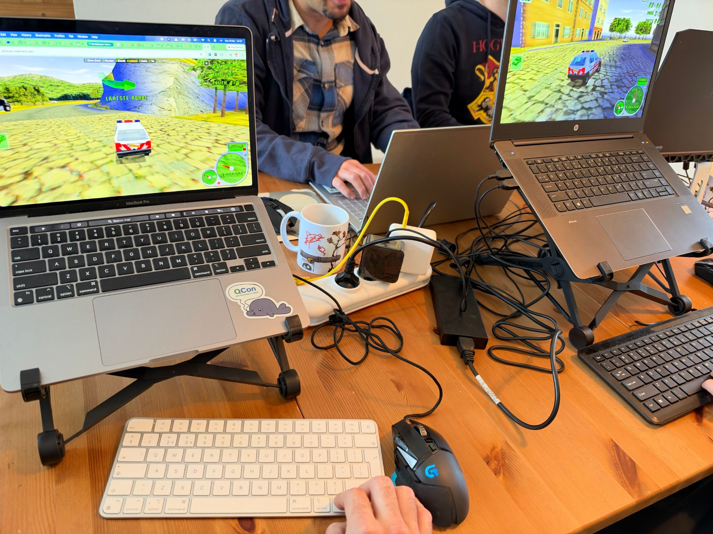

In the 90s Davilex Games created a lot of games which dominated my childhood: Red Cat, A2 Racer, London Racer, and for my German friends: Autobahn Raser. Even 30 years after these games came out they still seem to have a dedicated following, and people have fond memories of them.
Three weeks ago someone made a WebAssembly port of some of these old games! That means you can now play them in your browser on any kind of computer. Unfortunately there was always one problem with these games: they were single player!
I personally had loads of fun playing these games on my own, but I thought it would be more fun if we could play these old games all together. Thus, on Sunday morning, I decided to ask Claude to add a multiplayer mode. I gave it the open source A2 Racer WebAssembly repository someone else made three weeks ago, and no further guidance besides “make this game multiplayer”. After we played a different game for an hour the new implementation was ready for testing! I invited my friends to join the server at http://a2racer.meertens.dev/, and… it just worked!

Somehow we just spent 30 minutes trying to figure out how to create a large enough Don’t Starve Together server, but thanks to Claude we could all play a game made for Windows 95 on different operating systems!
Enjoy playing the game yourself at http://a2racer.meertens.dev/, and please invite all the childhood friends you didn’t see for 30 years for a fun LAN party!